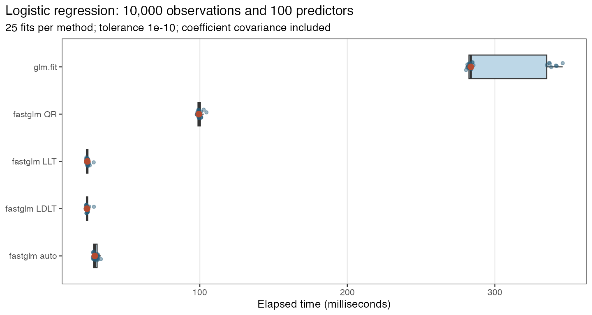
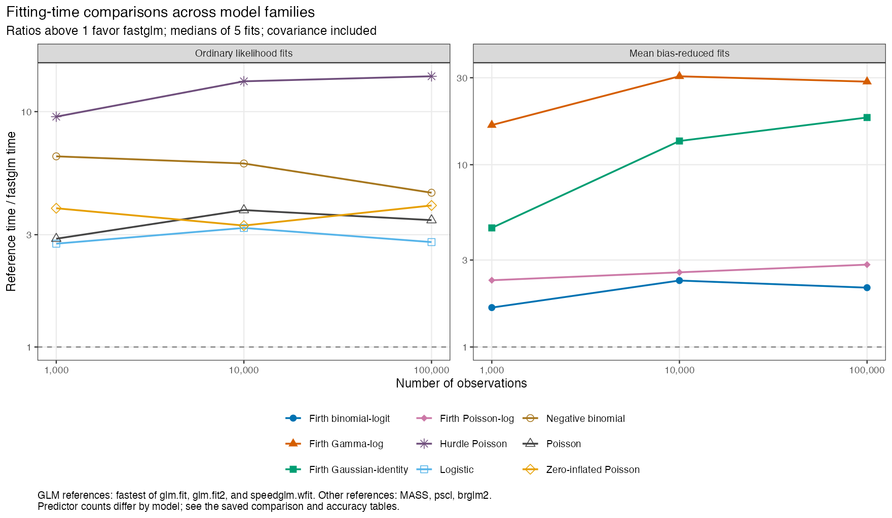
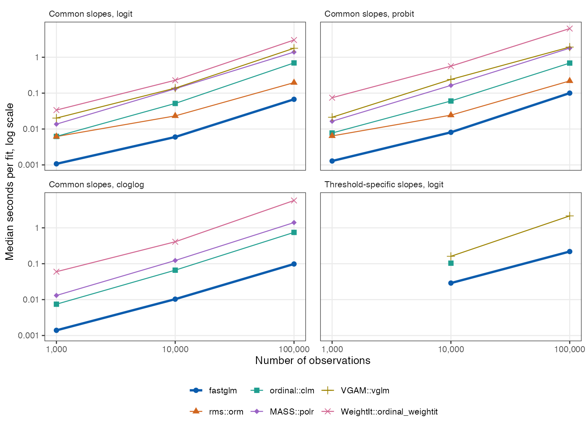
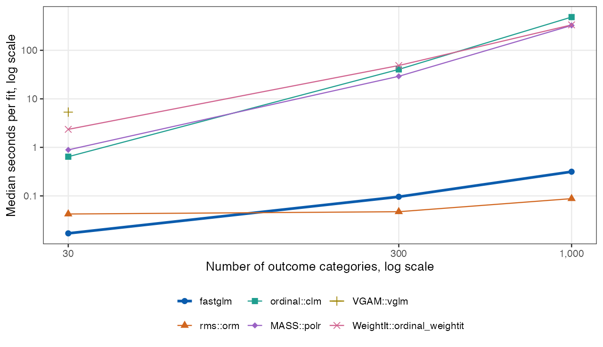
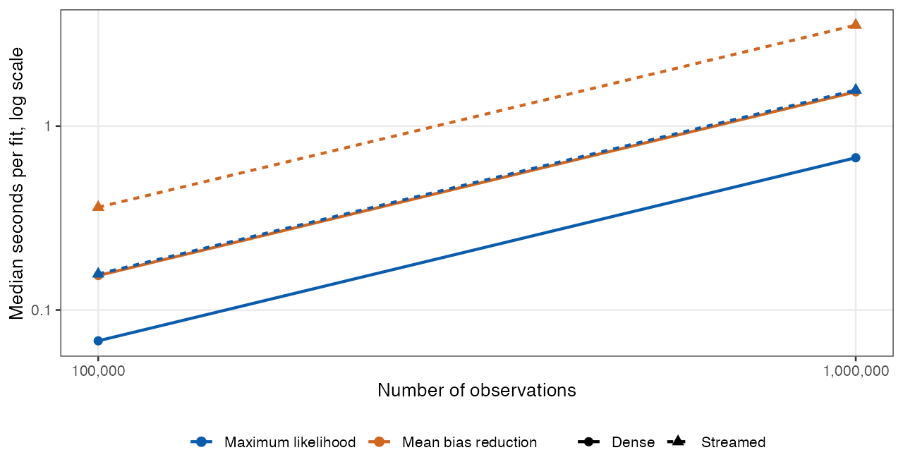

The fastglm package provides fast regression modeling, mean bias reduction, and inference for continuous, binary, count, and ordered outcomes. C++ fitting routines and numerical checks support familiar R workflows, including summary(), coef(), vcov(), predict(), residuals(), and logLik().
Models and estimation
| Model | Main interface | Estimation and examples |
|---|---|---|
| Generalized linear models (GLMs) | fastglm() |
Ordinary fitting and mean bias reduction for supported family/link combinations; GLM example |
| Negative-binomial counts | fastglm_nb() |
Maximum likelihood (ML) with estimated size; negative-binomial regression |
| Positive counts and hurdle models |
fastglm_truncated(), fastglm_hurdle()
|
Zero-truncated Poisson or negative-binomial regression, alone or with a binary occurrence model; hurdle examples |
| Zero-inflated counts | fastglm_zi() |
Poisson or negative-binomial counts with an additional zero component; zero-inflated models |
| Zero and positive continuous outcomes | fastglm_twopart() |
Binary and Gamma components, with ML or mean bias reduction; two-part models |
| Ordered outcomes | fastglm_ordinal() |
Proportional odds and selected nonparallel effects; logit, probit, and complementary log-log links; ML or mean bias reduction; ordinal functionality |
Mean bias reduction uses firth=TRUE where supported. Its scope depends on the model and family/link combination; the bias-reduction section describes the GLM choices. Truncated, hurdle, and zero-inflated count fitting uses ML.
Inference and computation
- Uncertainty and testing. Model-based intervals, joint Wald tests, robust and clustered covariance, and refitting bootstraps are available for supported classes. Profile inference covers dense binomial-logit Firth fits, ordinal ML fits with common or threshold-specific slopes, and negative-binomial size. Ordinal score tests address coefficient hypotheses or the common-slope assumption.
- Prediction and interpretation. Response means or category probabilities, prediction standard errors, averages and contrasts, residuals, and ordinal calibration summaries connect fitted coefficients to outcomes. Shared printed tables and optional broom methods support reporting.
- Large datasets. Dense, sparse, mapped, and repeatable-source inputs serve different model classes. Streaming supports GLMs, negative-binomial, hurdle, two-part, and ordinal models with common or threshold-specific slopes.
- Repeated fitting and numerical control. Prepared GLM and ordinal designs reuse predictor setup across responses. GLMs offer six decompositions and an automatic choice, with diagnostics for convergence and numerical conditioning.
The package overview maps these methods to their supported models. Dedicated guides cover bias reduction, counts, ordered outcomes, two-part outcomes, and large-data computation. See NEWS for the version history.
Installation · GLM example · Model extensions · Bias reduction · Inference and repeated fits · Large data · Speed · Stability · Benchmarks
Installation
Install the released version from CRAN or the development version from GitHub:
install.packages("fastglm")
pak::pak("jaredhuling/fastglm")Fitting a GLM
fastglm() accepts a numeric design matrix, a response, and an R family object. In the esoph example, the two response columns contain the numbers of cases and controls within each covariate group:
library(fastglm)
data(esoph)
X_esoph <- model.matrix(~ agegp + unclass(tobgp) + unclass(alcgp), data=esoph)
y_esoph <- cbind(esoph$ncases, esoph$ncontrols)
fit <- fastglm(X_esoph, y_esoph, family=binomial("cloglog"))
summary(fit)
#> Generalized linear model
#>
#> Call:
#> fastglm.default(x = X_esoph, y = y_esoph, family = binomial("cloglog"))
#> Family: binomial (cloglog link)
#>
#> Coefficients:
#> Estimate Std. Error z value Pr(>|z|)
#> (Intercept) -4.29199 0.29777 -14.414 <1e-04 ***
#> agegp.L 3.30677 0.63456 5.211 <1e-04 ***
#> agegp.Q -1.35525 0.57311 -2.365 0.018 *
#> agegp.C 0.20296 0.43334 0.468 0.640
#> agegp^4 0.15056 0.29318 0.514 0.608
#> agegp^5 -0.23425 0.17855 -1.312 0.190
#> unclass(tobgp) 0.33276 0.07285 4.568 <1e-04 ***
#> unclass(alcgp) 0.80384 0.07538 10.664 <1e-04 ***
#> ---
#> Signif. codes: 0 '***' 0.001 '**' 0.01 '*' 0.05 '.' 0.1 ' ' 1
#>
#> Dispersion Null deviance Null df Deviance Residual df AIC
#> 1 368 87 96.95 80 228
#> Convergence: converged (6 iterations)A formula and data frame can also be supplied directly. Formula fits retain factor coding, contrasts, and offsets for subsequent prediction:
fit_formula <- fastglm(
cbind(ncases, ncontrols) ~ agegp + unclass(tobgp) + unclass(alcgp),
data=esoph, family=binomial("cloglog"))
predict(fit_formula, newdata=esoph[1:3,], type="response", se.fit=TRUE)
#> Predictions with standard errors
#> Scale: response mean
#> Residual scale: 1
#>
#> Row Estimate Std. Error
#> 1 0.002727 0.002746
#> 2 0.003801 0.003806
#> 3 0.005298 0.005300The fitting function can also be passed to base R’s glm():
glm(cbind(ncases, ncontrols) ~ agegp + unclass(tobgp) + unclass(alcgp),
data=esoph, family=binomial("cloglog"), method=fastglm_fit)fastglmPure() exposes the lower-level fit without the final dispersion, AIC, and null-deviance calculations performed by fastglm(). For workflows that only need coefficient estimates, fastglm(..., inference="none") skips the final covariance calculation. Prepared designs, described below, are useful when several outcomes share the same predictors.
Extended models
Negative-binomial regression
fastglm_nb() estimates negative-binomial regression coefficients together with the size parameter theta, which determines variation beyond the Poisson variance. Dense fits alternate coefficient and theta updates in C++, in the spirit of MASS::glm.nb():
set.seed(123)
n <- 5000
X_nb <- cbind(1, matrix(rnorm(n*3), n, 3))
mu_nb <- exp(X_nb %*% c(.5, .4, -.2, .3))
y_nb <- MASS::rnegbin(n, mu=mu_nb, theta=2)
f_nb <- fastglm_nb(X_nb, y_nb)
c(coef(f_nb), theta=f_nb$theta)
#> x1 x2 x3 x4 theta
#> 0.4926199 0.3862258 -0.2200450 0.2991296 1.9923309Sparse designs and repeatable sources are also supported. vcov(f_nb, full=TRUE) includes theta jointly with the coefficients, and fastglm_confint_theta() obtains a profile-likelihood interval by varying theta and refitting the coefficients. The negative-binomial stability vignette examines challenging cases and the limit as the model approaches a Poisson distribution.
Hurdle models
A hurdle model combines a binary regression for whether an outcome is positive with a zero-truncated regression for its positive count. It is useful when the occurrence of an event and its positive frequency need separate explanations. fastglm_hurdle() supports Poisson and negative-binomial count components, corresponding to the models in pscl::hurdle() (Zeileis, Kleiber, and Jackman, 2008).
set.seed(123)
n <- 5000
x1 <- rnorm(n)
x2 <- rnorm(n)
lambda <- exp(.7 + .4*x1 - .3*x2)
is_positive <- rbinom(n, 1, plogis(-.4 + .5*x1 + .2*x2))
positive_counts <- integer(n)
for (i in seq_len(n)) {
repeat {
value <- rpois(1, lambda[i])
if (value > 0) { positive_counts[i] <- value; break }
}
}
hurdle_data <- data.frame(y=is_positive*positive_counts, x1=x1, x2=x2)
f_h <- fastglm_hurdle(y ~ x1+x2 | x1+x2, data=hurdle_data, dist="poisson")
coef(f_h)
#> count_(Intercept) count_x1 count_x2 zero_(Intercept)
#> 0.6793788 0.4162547 -0.3137229 -0.3767285
#> zero_x1 zero_x2
#> 0.4447325 0.1999711The formula before | specifies the count predictors; the formula after it specifies the predictors of a positive outcome. These can differ. fastglm_truncated() fits the positive-count regression on its own when observations are sampled conditional on being above zero.
Zero-inflated models
A zero-inflated model allows zeros to arise from both an additional zero component and the count distribution. This distinction changes the meaning of the binary component relative to a hurdle model. fastglm_zi() fits Poisson or negative-binomial versions using an expectation-maximization algorithm: it alternates estimating each observation’s component membership with updating the component regressions.
set.seed(123)
n <- 5000
x1 <- rnorm(n)
x2 <- rnorm(n)
lambda <- exp(.7 + .4*x1 - .3*x2)
extra_zero <- rbinom(n, 1, plogis(-.4 + .5*x1 + .2*x2))
zi_data <- data.frame(y=ifelse(extra_zero==1, 0L, rpois(n, lambda)), x1=x1, x2=x2)
f_zi <- fastglm_zi(y ~ x1+x2, data=zi_data, dist="poisson")
coef(f_zi)
#> count_(Intercept) count_x1 count_x2 zero_(Intercept)
#> 0.6647396 0.3965153 -0.3407168 -0.3750258
#> zero_x1 zero_x2
#> 0.4512788 0.1819040Count-model predictions distinguish the overall response mean, the probability of zero, and the means of the fitted components. Prediction standard errors combine uncertainty from the relevant parameters. The count-model vignette develops the interpretation and inference examples.
Two-part models for continuous outcomes
fastglm_twopart() combines a binary model for a positive outcome with a Gamma model for its positive amount. This is useful for outcomes such as expenditure that are exactly zero for some observations and positive and skewed for others:
set.seed(124)
amounts <- data.frame(x=rnorm(1000))
is_positive <- rbinom(1000, 1, plogis(-.3 + .4*amounts$x))
amounts$y <- is_positive*rgamma(1000, shape=2, scale=exp(.5 + .3*amounts$x)/2)
f_two <- fastglm_twopart(y ~ x, data=amounts)
predict(f_two, newdata=amounts[1:3,], type="response", se.fit=TRUE)
#> Predictions with standard errors
#> Scale: response mean
#>
#> Row Estimate Std. Error
#> 1 0.3117 0.03290
#> 2 0.7218 0.03732
#> 3 0.4540 0.03324The overall mean combines the probability of a positive outcome with its conditional mean amount. The semicontinuous-outcome vignette explains this interpretation and illustrates average contrasts, clustered inference, and bootstrap uncertainty.
Ordered outcomes
fastglm_ordinal() supports logit, probit, and complementary log-log cumulative links, with maximum likelihood or mean bias reduction (firth=TRUE). The logit model gives proportional odds with common slopes and partial proportional odds when selected effects vary through nonparallel=~term.
| Task | Ordinal interface and scope |
|---|---|
| Specify the model | Dense formula or matrix; individual outcomes, grouped category frequencies, and offsets; selected nonparallel effects require every category to be observed |
| Interpret predictions | Category and cumulative probabilities, prediction standard errors, average probabilities and contrasts; automatic marginal effects for continuous predictors |
| Test coefficients | Joint Wald tests and named contrasts; ML profile and ordinary or adjusted-score inference for retained dense models with all categories observed |
| Assess common slopes |
fastglm_po_test() tests the restriction jointly or by term in dense or streamed common-slope and partial fits |
| Assess fit and uncertainty | Prediction scores and calibration for dense or streamed fits; optional row-level boundary diagnostics; robust covariance for eligible fits; refitting bootstraps for retained common-slope fits |
| Repeat fits or read large datasets |
fastglm_ordinal_prepare() / fastglm_ordinal_batch() reuse dense designs; fastglm_ordinal_streaming() fits common-slope or partial models from repeatable blocks, including mean bias reduction |
Dense partial fits support robust covariance, marginal effects, ML profiles, and constrained score tests, including equality of selected slopes across thresholds. Streamed fits provide model-based or robust covariance, Wald inference, common-slope tests, prediction scores, and calibration by rereading their source. fastglm_diagnostics(fit,boundary=TRUE) locates rows near probability boundaries. Profile intervals and general constrained coefficient-score tests require retained data. Empty-category behavior also depends on the model and estimation method. The ordinal vignette begins with the full support guide and develops examples for each workflow.
Firth bias-reduced GLMs
firth=TRUE adjusts the estimating equations to reduce leading small-sample mean bias (Firth, 1993; Kosmidis and Firth, 2009). For logistic regression with a logit link and a full-rank design, the adjustment also yields finite coefficient estimates under separation, where predictors perfectly distinguish successes from failures (Kosmidis and Firth, 2021).
data(sex2, package="logistf")
X_firth <- model.matrix(~ age+oc+vic+vicl+vis+dia, data=sex2)
f_firth <- fastglm(X_firth, sex2$case, binomial(), firth=TRUE,
tol=1e-10, maxit=200)
coef(f_firth)
#> (Intercept) age oc vic vicl vis
#> 0.12025405 -1.10598133 -0.06881673 2.26887465 -2.11140819 -0.78831695
#> dia
#> 3.09601183Mean bias reduction supports the implemented binomial, Poisson, Gaussian, Gamma, inverse-Gaussian, and fixed-theta negative-binomial family/link combinations. It is available for dense, sparse, mapped, and streaming fits using the solvers supported by each format. Gamma fitting also adjusts dispersion. Quasi-likelihood and Tweedie families are not supported for bias reduction.
For retained dense binomial-logit Firth fits, profile inference re-estimates the other coefficients as the coefficient of interest varies, retaining the full original bias-reduction penalty. This allows confidence intervals to reflect an asymmetric penalized likelihood:
profile_ci <- confint(f_firth, parm=c("age", "dia"), method="profile")
cbind(estimate=coef(f_firth)[rownames(profile_ci)], profile_ci)
#> estimate 2.5 % 97.5 %
#> age -1.105981 -1.9737884 -0.3074251
#> dia 3.096012 0.7745682 8.0302935
fastglm_profile_test(f_firth, parm=c("oc", "vic"), null=0)
#> Firth penalized likelihood ratio test (asymptotic chi-square reference)
#> Null fit: Firth penalized likelihood
#>
#> Statistic df p-value
#> 28.46 2 < 1e-04
#>
#> Tested coefficients:
#> Estimate Null
#> oc -0.06882 0.00000
#> vic 2.26887 0.00000The profile procedures support independent binomial counts and frequency weights. Their chi-square reference is an approximation, and failed optimizations return diagnostics. The bias-reduction vignette explains the assumptions and compares the results with logistf and brglm2.
Inference and repeated fits
summary(), vcov(), and predict(..., se.fit=TRUE) provide model-based uncertainty. Robust covariance allows variation beyond the fitted variance model; clustered covariance additionally allows dependence within specified independent groups:
vcov(fit_formula, type="HC1")
vcov(fit_formula, cluster=group_id, type="HC1")
# The sandwich interfaces are also available for ordinary GLMs.
sandwich::vcovHC(fit_formula, type="HC0")
sandwich::vcovCL(fit_formula, cluster=group_id, type="HC1")fastglm_average() reports average predictions or specified contrasts with uncertainty. fastglm_bootstrap() provides uncertainty by resampling and refitting, with failed fits recorded in its output. The supported covariance calculations depend on the model and estimation method; the overview and model-specific vignettes describe those choices.
Repeated outcomes with a common design
fastglm_prepare() records predictors and common weights or offsets. fastglm_batch() then fits several responses using that design:
set.seed(125)
X_batch <- cbind(1, matrix(rnorm(1000*3), 1000, 3))
mu_batch <- exp(X_batch %*% c(.2, .3, -.2, .1))
Y_batch <- cbind(first=rgamma(1000, shape=2, scale=mu_batch/2),
second=rgamma(1000, shape=4, scale=mu_batch/4))
design <- fastglm_prepare(X_batch, firth=TRUE)
batch <- fastglm_batch(design, Y_batch, family=Gamma("log"))
sapply(batch, coef)
#> first second
#> (Intercept) 0.1528201 0.2011954
#> X2 0.2764287 0.2982692
#> X3 -0.2119394 -0.1813117
#> X4 0.1212752 0.1062714Gaussian-identity fits can reuse their matrix decomposition because it depends only on predictors and weights. Dense Firth batches with Gaussian-identity, Gamma-log, or Poisson-square-root links can also reuse their decomposition and bias-adjustment setup with the default automatic solver or explicit "llt". Dispersion and response-dependent adjustments remain specific to each outcome. Changes to the predictors or weights invalidate the saved calculations.
workers runs independent fits in separate R processes. This can reduce elapsed time when the fitting work is large enough to offset process startup and data-transfer costs. inference="none" skips covariance calculation, and retain.data=FALSE omits the design and response from the returned models; methods requiring those data then need new data or a refit.
Sparse, big.matrix, and streaming designs
Different storage formats suit different datasets:
-
Matrix::dgCMatrixstores only nonzero predictor entries. It can be passed directly tofastglm(), for example when indicator variables produce a mostly zero design. -
bigmemory::big.matrixprovides a mapped view of predictors, which may be backed by a file. Fitting reads row blocks without making a complete ordinary R-matrix copy. -
fastglm_streaming()repeatedly requests manageable blocks from a supplied function, called a callback. This supports data that need to be read from an external source or constructed as fitting proceeds.
The following example divides one dataset into four blocks and compares the fitted coefficients with an in-memory fit:
set.seed(321)
n <- 4000
X_stream <- cbind(1, matrix(rnorm(n*3), n, 3))
y_stream <- rbinom(n, 1, plogis(X_stream %*% c(.2, .4, -.2, .3)))
chunks <- function(k) {
rows <- ((k-1)*1000+1):(k*1000)
list(X=X_stream[rows,,drop=FALSE], y=y_stream[rows])
}
fit_stream <- fastglm_streaming(chunks, n_chunks=4, family=binomial(), tol=1e-10)
fit_full <- fastglm(X_stream, y_stream, binomial(), method="llt", tol=1e-10)
max(abs(coef(fit_stream)-coef(fit_full)))
#> [1] 2.775558e-16fastglm_source() combines a repeatable reader with formula information, keeping factor coding and transformations consistent across blocks. Optional fastglm_source_arrow() and fastglm_source_dbi() adapters read Parquet files and database queries. Each read must reproduce the same observations in the same order throughout fitting and inference.
Predictions normally accumulate in a vector. When that output is too large, sink accepts a function that receives one block of results at a time and saves or summarizes it. Here only the mean prediction in each block is retained:
block_means <- numeric(4)
predict(fit_stream, type="response",
sink=function(value, k) block_means[k] <<- mean(value))
block_means
#> [1] 0.5530598 0.5507933 0.5519271 0.5422198Robust covariance and average predictions can also read the source in blocks. Clustered inference additionally stores a contribution vector for each group, and collecting all predictions still requires storage proportional to the number of observations. The large-data vignette explains these memory and repeated-read costs, including the Firth calculations reused across passes.
Decomposition methods
Iteratively reweighted least squares (IRLS) fits a GLM through a sequence of weighted linear regressions. A matrix decomposition arranges each regression calculation so that its coefficients can be solved numerically. fastglm provides six explicit methods through RcppEigen (Bates and Eddelbuettel, 2013), together with an automatic choice:
| Name | Integer | Decomposition or selection rule |
|---|---|---|
"qr" |
0 |
Column-pivoted Householder QR; the default for dense fastglm() fits |
"qr_unpivoted" |
1 |
Householder QR without column pivoting |
"llt" |
2 |
LLT Cholesky |
"ldlt" |
3 |
LDLT Cholesky |
"qr_full" |
4 |
Full-pivoted Householder QR |
"svd" |
5 |
Bidiagonal divide-and-conquer singular value decomposition |
"auto" |
Scale columns, attempt LLT, and fall back to pivoted QR for a problematic dense system |
For dense fits, pivoted QR can identify redundant columns, allowing aliased coefficients to be reported as NA. Cholesky works with the smaller predictor crossproduct and can be faster when the design is well conditioned, meaning that small numerical errors are not strongly amplified. Explicit Cholesky fits require full column rank and report an error when the information matrix is singular or ill conditioned. Sparse and mapped fits use Cholesky methods. Streaming GLMs also support method="qr", which updates a triangular factor across blocks for greater stability with nearly redundant predictors. Streaming fits require full column rank with either method.
Native C++ families
For recognized family/link combinations, variance, mean derivatives, inverse links, and deviance contributions are evaluated directly in C++. This reduces repeated calls from the fitting loop back into R. The native combinations are:
| Family | Links |
|---|---|
| Gaussian | identity, log, inverse |
| Binomial | logit, probit, complementary log-log, log |
| Poisson | log, identity, square root |
| Gamma | log, inverse, identity |
| Inverse Gaussian | inverse squared (1/mu^2), log, identity, inverse |
| Negative binomial with fixed theta | log, identity, square root |
| Tweedie with specified variance power | log, identity, inverse, square root |
Quasibinomial and quasipoisson fits share the corresponding mean and variance calculations, with dispersion handled separately. Family detection checks the supplied functions as well as the family name, so a modified family retains its R behavior. Other valid R family/link combinations use the supplied R functions. Firth bias reduction has a narrower supported scope, described in the bias-reduction section and its vignette.
Speed
The C++ implementation reduces repeated work in fitting and offers several ways to solve the weighted regressions. The resulting speed advantage depends on the family, the number of rows and columns, the solver, and the requested inference. The following comparison uses a logistic-regression design with 10,000 observations, 100 predictors, and 25 timing repetitions per method.
set.seed(123)
n.obs <- 10000
n.vars <- 100
X <- matrix(rnorm(n.obs*n.vars, sd=3), n.obs, n.vars)
y <- as.numeric(drop(X[,1:25] %*% runif(25, -.1, .1)) > rnorm(n.obs))
# Include coefficient covariance computation in each timed fit.
with_covariance <- function(fit, raw_glm=FALSE) {
if (raw_glm) class(fit) <- c("glm", "lm")
fit$benchmark.covariance <- vcov(fit)
fit
}
microbenchmark::microbenchmark(
glm.fit = with_covariance(glm.fit(X, y, family=binomial(), intercept=FALSE,
control=glm.control(epsilon=1e-10, maxit=100)), raw_glm=TRUE),
fastglm_QR = with_covariance(fastglm(X, y, binomial(), method="qr", tol=1e-10)),
fastglm_LLT = with_covariance(fastglm(X, y, binomial(), method="llt", tol=1e-10)),
fastglm_LDLT = with_covariance(fastglm(X, y, binomial(), method="ldlt", tol=1e-10)),
fastglm_auto = with_covariance(fastglm(X, y, binomial(), method="auto", tol=1e-10)),
times=25L
)Times are for fastglm 0.1.3 and R version 4.5.1 (2025-06-13) on Darwin (arm64).

The table reports median elapsed time and the largest absolute differences from glm.fit() in coefficients and fitted probabilities. Times include ordinary covariance calculations.
| Method | Median time (ms) | Max. coefficient difference | Max. fitted-probability difference |
|---|---|---|---|
| glm.fit | 283.71 | 0.00e+00 | 0.00e+00 |
| fastglm QR | 99.36 | 1.30e-15 | 6.22e-15 |
| fastglm LLT | 23.77 | 1.22e-15 | 6.55e-15 |
| fastglm LDLT | 23.55 | 1.22e-15 | 6.44e-15 |
| fastglm auto | 28.80 | 9.44e-16 | 5.22e-15 |
For this design, the median time for glm.fit() was 283.7 ms, compared with 23.8 ms for LLT. The coefficient and fitted-probability differences are close to floating-point rounding error, so the fits agree to numerical precision.
The benchmarks compare scaling across model classes.
Stability
Fitting can become difficult when a proposed coefficient update produces invalid fitted means or moves to a poorer likelihood value. For ordinary GLMs, fastglm uses a step-halving safeguard following Marschner (2011): an unsuccessful update is shortened until an acceptable step is found. Its initialization and solver choices also affect the subsequent iterations.
A Gamma model using a square-root link provides one example. The simulated response is highly skewed, and the fitted mean uses a different functional form from the generating model. The calculation below uses the same iteration limit and nominal tolerance for both fitting methods:
set.seed(1)
X_stability <- matrix(rnorm(10000*100), ncol=100)
y_stability <- exp(.25*X_stability[,1] - .25*X_stability[,3] +
.5*X_stability[,4] - .5*X_stability[,5] + rnorm(10000)) + .1
gfit_fast <- fastglm(y_stability ~ X_stability, family=Gamma("sqrt"),
tol=1e-8, maxit=100)
gfit_base <- suppressWarnings(glm(y_stability ~ X_stability,
family=Gamma("sqrt"), control=glm.control(epsilon=1e-8, maxit=100)))
data.frame(method=c("fastglm", "glm"),
converged=c(gfit_fast$converged, gfit_base$converged),
iterations=c(gfit_fast$iter, gfit_base$iter),
log_likelihood=c(as.numeric(logLik(gfit_fast)), as.numeric(logLik(gfit_base))))
#> method converged iterations log_likelihood
#> 1 fastglm TRUE 19 -16046.66
#> 2 glm FALSE 100 -16068.27fastglm converged in 19 iterations, while glm reached its limit of 100 iterations without convergence.
Convergence status matters when comparing likelihoods or runtimes: an unfinished fit is not an alternative estimate of the same quality. The computational stability vignette includes comparisons with glm2 and speedglm, and fastglm_diagnostics() reports convergence, the chosen solver, aliased coefficients, and numerical diagnostics for a fitted model.
Benchmarks
These comparisons span model classes and sample sizes: ordinary logistic and Poisson fits with glm.fit, glm2, and speedglm; negative-binomial regression with MASS::glm.nb; hurdle and zero-inflated Poisson models with pscl; and mean bias reduction with brglm2 using type="AS_mean". Ordinary and Firth GLMs use method="auto" in fastglm, while the dedicated count-model functions use their default solvers.
For ordinary logistic and Poisson regression, the plotted reference is the fastest of the three comparison functions at each sample size. The other models use the named reference implementation. The ratio is reference time divided by fastglm time: a value of two means fastglm took half as long. Firth families are shown separately because their computational requirements differ.

At 100,000 observations, using medians of five repetitions:
| Model | Design columns | fastglm (ms) | Reference | Reference (ms) | Time ratio |
|---|---|---|---|---|---|
| Logistic | 30 | 59.17 | speedglm.wfit | 165.13 | 2.79 |
| Poisson | 30 | 64.31 | speedglm.wfit | 222.45 | 3.46 |
| Negative binomial | 4 | 124.90 | MASS::glm.nb | 564.95 | 4.52 |
| Hurdle Poisson | 3 | 42.52 | pscl::hurdle | 600.81 | 14.13 |
| Zero-inflated Poisson | 3 | 314.47 | pscl::zeroinfl | 1255.69 | 3.99 |
| Firth binomial-logit | 6 | 39.37 | brglm2::brglmFit | 83.29 | 2.12 |
| Firth Poisson-log | 6 | 36.67 | brglm2::brglmFit | 103.77 | 2.83 |
| Firth Gamma-log | 6 | 36.00 | brglm2::brglmFit | 1028.00 | 28.56 |
| Firth Gaussian-identity | 6 | 11.59 | brglm2::brglmFit | 210.40 | 18.15 |
At this sample size, the largest time ratio is 28.6 for Firth Gamma-log. Gamma bias-reduction fits combine identical prior-weight contributions in the dispersion equation and reuse matrix calculations that remain constant during fitting.
Speed depends on the design and computing environment. Times include ordinary covariance calculation, but not profile intervals or bootstrap refits. GLM and Firth comparisons use matrix interfaces, and both hurdle and zero-inflated comparisons use formulas. For negative-binomial regression, fastglm_nb() takes a matrix while MASS::glm.nb() also constructs its design from a formula. Packages use different convergence criteria, so every comparison also checks numerical agreement.
The benchmark vignette adds sparse and mapped-matrix comparisons. Code for all comparisons is in the benchmarks directory of the repository.
Ordinal comparison
These comparisons use packages that fit the same cumulative-link models: rms::orm, ordinal::clm, MASS::polr, VGAM::vglm, and WeightIt::ordinal_weightit. Each design has 10 predictors, and times include coefficient covariance. A time is compared only when that fit converges and agrees with fastglm on the log likelihood and common slopes.

| Link | Method | Seconds | Time ratio |
|---|---|---|---|
| logit | fastglm | 0.067 | 1.0 |
| logit | rms::orm | 0.196 | 2.9 |
| logit | ordinal::clm | 0.695 | 10.3 |
| logit | MASS::polr | 1.392 | 20.7 |
| logit | VGAM::vglm | 1.783 | 26.5 |
| logit | WeightIt::ordinal_weightit | 3.021 | 44.9 |
| probit | fastglm | 0.100 | 1.0 |
| probit | rms::orm | 0.219 | 2.2 |
| probit | ordinal::clm | 0.688 | 6.9 |
| probit | MASS::polr | 1.794 | 17.9 |
| probit | VGAM::vglm | 1.920 | 19.2 |
| probit | WeightIt::ordinal_weightit | 6.300 | 62.9 |
| cloglog | fastglm | 0.098 | 1.0 |
| cloglog | ordinal::clm | 0.747 | 7.6 |
| cloglog | MASS::polr | 1.403 | 14.3 |
| cloglog | VGAM::vglm | 6.508 | NA |
| cloglog | WeightIt::ordinal_weightit | 5.783 | 58.8 |
With 100,000 observations and 5 categories, rms::orm is the closest comparison, at 2.9 times the fastglm time for logit and 2.2 times for probit. rms::orm was timed for these two links only. For cloglog, VGAM::vglm warned about intersecting predictors and returned a different fit, so it has no ratio.
rms::orm is designed for outcomes with very many distinct values, and it overtakes fastglm between 30 and 300 categories:

| Categories | Method | Seconds | Time ratio |
|---|---|---|---|
| 30 | fastglm | 0.017 | 1.00 |
| 30 | rms::orm | 0.042 | 2.51 |
| 30 | ordinal::clm | 0.643 | 38.02 |
| 30 | MASS::polr | 0.888 | 52.56 |
| 30 | VGAM::vglm | 5.331 | 315.44 |
| 30 | WeightIt::ordinal_weightit | 2.352 | 139.15 |
| 300 | fastglm | 0.096 | 1.00 |
| 300 | rms::orm | 0.047 | 0.49 |
| 300 | ordinal::clm | 40.457 | 421.96 |
| 300 | MASS::polr | 29.138 | 303.90 |
| 300 | WeightIt::ordinal_weightit | 48.617 | 507.07 |
| 1000 | fastglm | 0.315 | 1.00 |
| 1000 | rms::orm | 0.088 | 0.28 |
| 1000 | ordinal::clm | 484.423 | 1537.47 |
| 1000 | MASS::polr | 325.835 | 1034.14 |
| 1000 | WeightIt::ordinal_weightit | 334.278 | 1060.94 |
With 20,000 observations, rms::orm takes 0.5 times the fastglm time at 300 categories and 0.3 times at 1,000, so it is the faster choice in that range. Most of the fastglm time in that range is the expected-information calculation behind the reported covariance. VGAM::vglm was not run above 30 categories because it would need about 160 GB of memory at 1,000.
For threshold-specific slopes with 1,000 observations, fastglm reported nonconvergence because the best fit with ordered cumulative probabilities at every row lies on the ordering boundary, so there is no time comparison at that size. ordinal::clm reported convergence with a higher log likelihood, but its cumulative predictors cross at 3 of the 1,000 rows, which is not a valid probability model at those rows. At 100,000 observations, ordinal::clm took 79.3 seconds and reported that it had not converged, although its log likelihood agreed with fastglm, so it is omitted there as well.
None of these packages fits mean bias-reduced cumulative-link models or reads ordinal data in blocks. The last column compares each streamed fit with the dense fit of the same estimator:

| Observations | Fit | Seconds | Largest coefficient difference from dense fit |
|---|---|---|---|
| 100,000 | Dense ML | 0.066 | 0.0e+00 |
| 100,000 | Dense mean bias reduction | 0.155 | 0.0e+00 |
| 100,000 | Streamed ML | 0.154 | 2.2e-16 |
| 100,000 | Streamed mean bias reduction | 0.369 | 1.1e-16 |
| 1,000,000 | Dense ML | 0.671 | 0.0e+00 |
| 1,000,000 | Dense mean bias reduction | 1.533 | 0.0e+00 |
| 1,000,000 | Streamed ML | 1.596 | 1.1e-16 |
| 1,000,000 | Streamed mean bias reduction | 3.573 | 3.0e-17 |
Streamed fits use blocks of 10,000 rows.
References
- Firth, D. (1993). Bias reduction of maximum likelihood estimates. Biometrika, 80(1), 27–38. doi:10.1093/biomet/80.1.27
- Kosmidis, I. and Firth, D. (2009). Bias reduction in exponential family nonlinear models. Biometrika, 96(4), 793–804. doi:10.1093/biomet/asp055
- Kosmidis, I. and Firth, D. (2021). Jeffreys-prior penalty, finiteness and shrinkage in binomial-response generalized linear models. Biometrika, 108(1), 71–82. doi:10.1093/biomet/asaa052
- Marschner, I. C. (2011). glm2: Fitting generalized linear models with convergence problems. The R Journal, 3(2), 12–15. doi:10.32614/RJ-2011-012
- Bates, D. and Eddelbuettel, D. (2013). Fast and elegant numerical linear algebra using the RcppEigen package. Journal of Statistical Software, 52(5), 1–24. doi:10.18637/jss.v052.i05
- Zeileis, A., Kleiber, C., and Jackman, S. (2008). Regression models for count data in R. Journal of Statistical Software, 27(8), 1–25. doi:10.18637/jss.v027.i08
Use citation("fastglm") for the package citation.